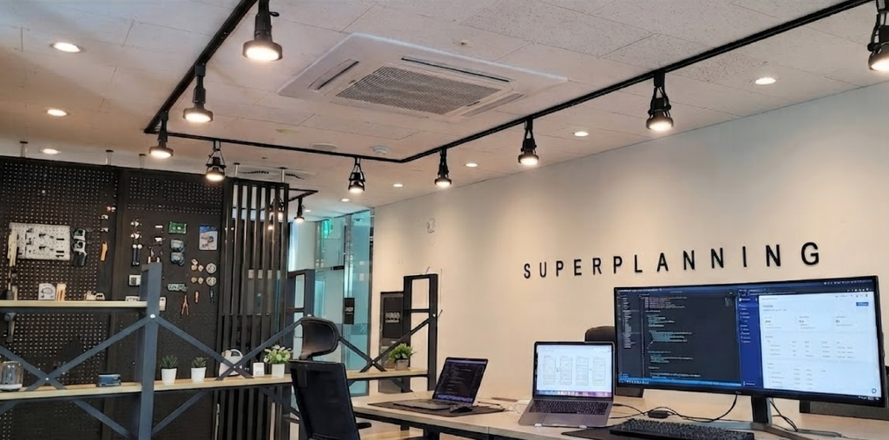

사용성과 구조를 함께 설계
사용자 흐름, 화면 목적, 예외 상황을 함께 고려해 모바일앱 개발과 웹개발의 방향을 초기에 안정적으로 잡습니다.
슈퍼플래닝은 UX디자인과 실제 구현이 끊기지 않도록 웹개발, 모바일앱 개발, AI 연동, 유지보수까지
흐름으로 연결합니다.

슈퍼플래닝은 UX디자인, 퍼블리싱, 프론트엔드·백엔드 개발이 끊기지 않도록 연결해 웹개발과 모바일앱 개발의 실제 구현 완성도를 높입니다.
"UX디자인에 최적화된 웹·앱개발은 화면 흐름과 예외 상황을 초기 단계에 함께 고려해 재작업을 줄이고 배포 후 운영 비용까지 낮추는 방식입니다."
웹/앱 개발은 기능만 구현한다고 끝나지 않습니다. 사용자가 실제로 이해하고 사용할 수 있는 구조, 화면 흐름, 입력 방식, 예외 처리까지 함께 설계되어야 서비스가 제대로 작동합니다. 특히 모바일앱 개발이나 웹서비스 구축에서는 기획과 디자인, 개발이 분리될수록 수정 비용이 커지고 일정이 흔들리기 쉽습니다. 슈퍼플래닝은 바로 이 지점을 줄이기 위해 UX디자인에 최적화된 웹/앱 개발 방식을 기본으로 삼고 있습니다.
많은 기업이 앱개발업체를 찾을 때 구현 가능 여부만 먼저 비교하지만, 실제 프로젝트의 성패는 사용성과 구조 완성도에서 갈리는 경우가 많습니다. 같은 기능을 만들더라도 UX 관점이 반영된 서비스는 고객의 이해 속도와 전환율, 재방문율이 달라집니다. 슈퍼플래닝은 화면 기획, GUI디자인, HTML 퍼블리싱, 프론트엔드·백엔드 개발을 끊기지 않게 연결해 기획서와 실제 결과물 사이의 간극을 줄입니다.
예비창업자와 스타트업이 자주 검색하는 앱개발방법도 결국 이 구조에서 결정됩니다. 처음부터 기능만 빠르게 붙이는 방식은 단기적으로는 빨라 보일 수 있지만, 운영 단계에서 수정 범위와 비용이 불어나기 쉽습니다. 반대로 UX디자인에 최적화된 웹/앱 개발은 초기 구조를 더 탄탄하게 잡는 대신, 이후 기능 확장, 앱개발 비용 관리, 유지보수 안정성 측면에서 훨씬 유리합니다.

사용자 흐름, 화면 목적, 예외 상황을 함께 고려해 모바일앱 개발과 웹개발의 방향을 초기에 안정적으로 잡습니다.
UX디자인, 퍼블리싱, 프론트엔드·백엔드 구현을 연결해 앱개발 외주비용이 불필요하게 커지는 재작업을 줄입니다.
단순 시연용 결과가 아니라 실제 배포와 운영, 고도화까지 이어질 수 있는 웹/앱 개발 구조를 지향합니다.
"AI 기반 모바일앱 개발은 챗봇·추천·자동화 등 AI 기능을 서비스 목적에 맞게 웹·앱에 연동하고 단순 유행이 아닌 운영 효율 관점에서 설계하는 방식입니다."
슈퍼플래닝은 iOS와 안드로이드를 포함한 네이티브 앱 개발, 그리고 효율적인 운영이 가능한 하이브리드 앱 개발을 모두 지원합니다. 서비스 목적, 예산, 운영 인력, 기능 복잡도에 따라 적합한 방식이 다르기 때문에 특정 기술만 일방적으로 권하지 않고 프로젝트 상황에 맞는 구조를 제안합니다. 앱개발업체를 찾는 고객이 실제로 궁금해하는 것은 무엇을 만들 수 있는가보다 어떤 방식이 우리 서비스에 더 적합한가이기 때문에, 초기 판단부터 실무적으로 안내합니다.
네이티브 앱 개발은 운영체제별 사용자 경험과 성능 최적화가 중요한 프로젝트에 적합합니다. 푸시, 카메라, 위치, 생체인증, 고해상도 인터랙션 같은 기능이 핵심이라면 네이티브 방식이 더 유리할 수 있습니다. 슈퍼플래닝은 UX디자인과 연결된 상태에서 모바일앱 개발을 진행해 기능 구현과 사용성 사이의 균형을 맞춥니다.
하이브리드 앱 개발은 빠른 출시와 예산 효율을 중시하는 서비스에서 강점이 있습니다. 예비 고객이 자주 검색하는 앱개발 비용이나 앱개발 외주비용 관점에서도, 핵심 기능을 우선 구축하고 단계적으로 확장해야 하는 경우 실용적인 선택이 될 수 있습니다.
웹서비스 및 관리자 시스템 개발은 단순히 기능만 구현하는 일이 아닙니다.
기획의 의도를 100화하는 정교한 웹퍼블리싱과 CSS 디자인 시스템 구축을 바탕으로, 화면의 완성도와 일관성을 높여야 비로소 뛰어난 사용자 경험이 완성됩니다. 또한 실제 운영자가 데이터를 관리하고, 고객 문의를 처리하고, 콘텐츠와 권한을 통제할 수 있어야 서비스가 안정적으로 운영됩니다. 슈퍼플래닝은 웹개발과 앱개발, 퍼블리싱 영역을 분리하지 않고 함께 설계해 사용자 화면과 운영 화면이 따로 놀지 않도록 유기적으로 연결합니다.
기존 개발물 리뉴얼 및 기능 고도화 프로젝트도 주요 서비스 범위에 포함됩니다. 신규 구축만 가능한 팀이 아니라, 이미 운영 중인 서비스의 문제를 분석하고 필요한 범위만 재정비하는 방식으로도 협업할 수 있습니다. 이는 앱개발업체를 새로 찾는 고객뿐 아니라 기존 외주 프로젝트를 이어받아 안정화하려는 기업에게도 중요한 장점입니다.
"슈퍼플래닝의 차별점은 UI/UX 기획부터 QA·배포·연간 유지보수까지 한 팀이 책임지는 구조로, 파견·상주 모두 가능한 풀스택 IT개발팀 보유입니다."
슈퍼플래닝의 강점은 기획만 하는 조직도, 개발만 하는 조직도 아니라는 점입니다. DB설계, 서버·백엔드, 프론트엔드, 퍼블리싱, GUI디자인까지 연결 가능한 10년 차 이상 풀스택 전문팀이 상주 인력 체계로 협업하고 있어, 요구사항과 실제 구현 사이에서 발생하는 해석 오류를 줄일 수 있습니다. 많은 기업이 앱개발업체를 선정할 때 포트폴리오만 비교하지만, 실제 프로젝트에서는 누가 요구사항을 정리하고 누가 책임 있게 연결하는지가 훨씬 중요합니다.
슈퍼플래닝은 공공기관, 금융 프로젝트와 같이 보안이 중요한 경우 개발팀 파견, 상주근무도 가능합니다.
슈퍼플래닝은 DB설계, 서버·백엔드, 프론트엔드, 퍼블리싱, GUI디자인까지 연결 가능한 상주형 협업 체계를 바탕으로 웹개발, 모바일앱 개발, AI 연동, 유지보수까지 실무 중심으로 수행합니다.
특히 고객이 많이 검색하는 조건 중 하나가 앱개발자 상주근무 가능 여부입니다. 프로젝트 성격에 따라 정기 미팅, 밀착 커뮤니케이션, 운영 대응 체계가 중요하기 때문입니다. 슈퍼플래닝은 상주형에 준하는 협업 밀도와 실무 대응 중심의 커뮤니케이션 경험을 갖추고 있어, 외주라고 해서 요청사항 전달이 끊기거나 개발 방향이 어긋나는 문제를 줄이는 데 강점이 있습니다.
기술 역량만 나열하는 방식으로 끝나지 않는 것도 차별점입니다. 앱개발 비용이나 웹개발 외주비용은 초기 제작비만으로 판단하기 어렵고, 이후 수정, 운영, 재개발 비용까지 함께 보아야 합니다. 슈퍼플래닝은 처음부터 운영 가능한 구조를 전제로 설계하기 때문에 장기적으로 더 효율적인 방향을 제시할 수 있습니다.
"개발 진행 프로세스는 기획→디자인→요구사항 정의→퍼블리싱·구현→QA→배포→운영의 6단계로, 단계별 산출물과 검증 기준을 사전에 합의합니다."
웹/앱 프로젝트가 지연되거나 예산이 불필요하게 커지는 가장 큰 이유 중 하나는 기획, 디자인, 개발, 테스트, 배포가 서로 분리되어 움직이기 때문입니다. 슈퍼플래닝은 이 비효율을 줄이기 위해 기획부터 디자인, 퍼블리싱, 개발, 검수, 배포까지 이어지는 원스톱 개발 프로세스로 프로젝트를 운영합니다. 앱개발방법을 처음 검토하는 고객도 무엇부터 준비해야 하는지 이해하기 쉽도록 단계별 흐름을 분명하게 안내합니다.
| 단계 | 핵심 업무내용 | 주요 산출물 |
|---|---|---|
| 1st 기획 Plan | 프로젝트 목표, 사용자 요구사항, 핵심 기능 범위, 우선순위를 정리합니다. 아이디어 단계라면 앱개발방법과 구축 방향을 구체화하고, 기존 서비스가 있다면 문제 구간과 리뉴얼 범위를 확인합니다. | 요구사항 정리, 기능 범위표, 우선순위 정의, 개발 방향 제안 |
| 2nd 설계 Architect | 서비스 구조, 화면 흐름, DB설계, 서버·백엔드 구조, 프론트엔드 구성, 관리자 페이지와 외부 연동 방식을 정리합니다. 개발 이후 수정 비용을 줄이기 위해 운영 구조까지 함께 검토합니다. | 서비스 구조도, 화면 흐름, DB설계안, API·관리자 기능 정의 |
| 3rd 개발 Build | GUI디자인과 HTML 퍼블리싱 결과를 바탕으로 프론트엔드·백엔드 개발을 진행합니다. 프로젝트 성격에 따라 네이티브 앱 개발, 하이브리드 앱 개발, 웹서비스 구축을 병행하고, 실제 사용성과 구현 완성도를 함께 점검합니다. | 프론트엔드 구현, 백엔드 개발, 네이티브/하이브리드 앱 개발, 웹서비스 개발 |
| 4th 테스트·배포 Operate | 기능 테스트, 오류 수정, 성능 점검, 배포 준비를 거쳐 실제 운영 가능한 상태로 마무리합니다. 이후 앱스토어·배포 대응, 운영 안정화, 유지보수와 기능 고도화까지 연결합니다. | QA 결과, 수정 반영, 배포본, 운영 체크리스트, 유지보수 계획 |
이 프로세스의 장점은 단순히 순서가 깔끔하다는 점이 아닙니다. 앱개발업체와 협업할 때 가장 많이 생기는 문제인 해석 차이, 기능 누락, 예산 초과를 줄이는 구조라는 점이 중요합니다. 그래서 신규 서비스 구축뿐 아니라 기존 서비스 리뉴얼, 기능 추가, 운영 안정화 프로젝트에도 유연하게 적용할 수 있습니다.
"연간 유지보수는 오류 수정·기능 개선·성능 점검·보안 보완·운영 대응 체계를 지속적으로 관리해 초기 구축 이후 필요한 리뉴얼과 구조 개선까지 이어서 대응합니다."
최근에는 단순한 웹개발이나 앱개발을 넘어, AI 기능을 실제 서비스에 어떻게 연결할 수 있는지에 대한 문의가 크게 늘고 있습니다. 예를 들어 챗봇, 추천 기능, 자동 분류, 텍스트 생성, 요약, 데이터 분석, 운영 자동화 같은 기능은 이제 많은 기업이 검토하는 기본 옵션에 가깝습니다. 슈퍼플래닝은 이러한 흐름에 맞춰 AI 서비스 개발과 기존 웹/앱 서비스의 AI 연동 고도화를 함께 지원합니다.
챗봇, 추천, 자동화, 텍스트 처리, 요약, 데이터 분석 등 서비스 목적에 맞는 AI 기능을 웹/앱에 연동합니다. 앱개발ai를 단순 유행이 아니라 실제 운영 효율과 사용자 경험 개선 관점에서 설계합니다.
배포 이후 발견되는 이슈, 속도 저하, 운영 불편, 관리자 기능 부족 문제를 점검하고 단계적으로 보완합니다. 초기 구축 이후 필요한 리뉴얼과 구조 개선까지 이어서 대응합니다.
오류 수정, 기능 개선, 성능 점검, 보안 보완, 운영 대응 체계를 지속적으로 관리합니다. 앱개발 비용은 제작만이 아니라 운영 단계까지 함께 봐야 한다는 점에서 중요한 영역입니다.
검색 사용자가 많이 찾는 표현으로 말하면, 앱개발 AI 연동은 더 이상 일부 대기업만의 영역이 아닙니다. 스타트업, 중소기업, 플랫폼 서비스도 예산 범위 안에서 필요한 기능만 단계적으로 도입할 수 있습니다. 중요한 것은 화려한 AI 기능을 많이 넣는 것이 아니라, 서비스 목적과 실제 사용자 행동에 맞게 어떤 자동화와 추천, 응답 기능이 필요한지 판단하는 것입니다.
또 하나 중요한 영역은 유지보수입니다. 많은 고객이 앱개발 비용만 먼저 검색하지만, 실제로는 배포 이후의 안정화와 운영 대응이 서비스 완성도를 좌우합니다. 슈퍼플래닝은 기존 개발물 리뉴얼, 장애 대응, 기능 개선, 성능 점검, 보안 보완, 연간 운영 유지보수까지 장기 관점에서 지원할 수 있는 체계를 갖추고 있습니다.
"아래에서 자주 묻는 질문과 답변을 확인하시거나, 문의하기로 직접 연락하실 수 있습니다."
24시간 상담 / 보통 10분 이내 응답